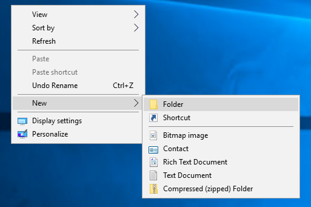
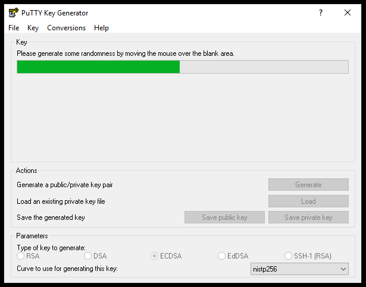
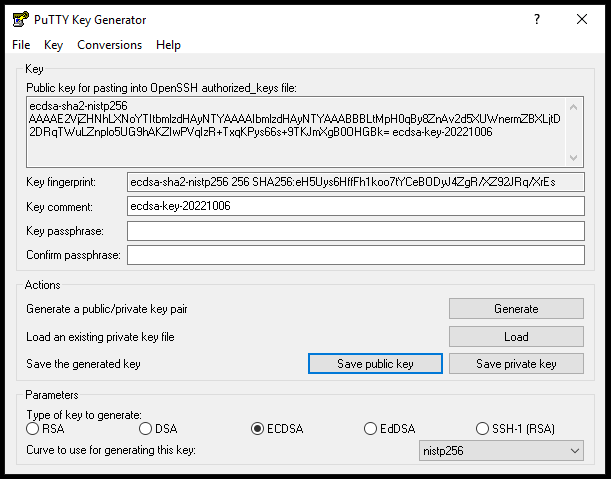
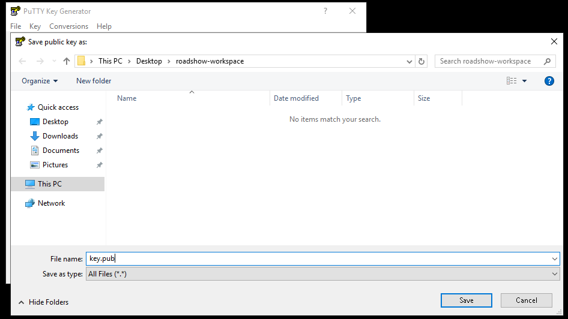
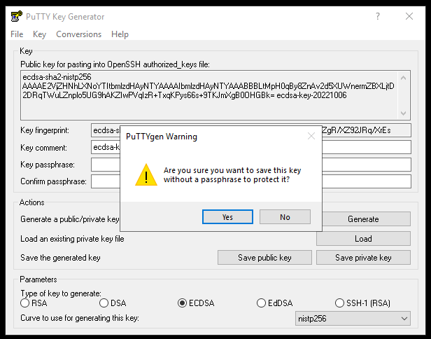
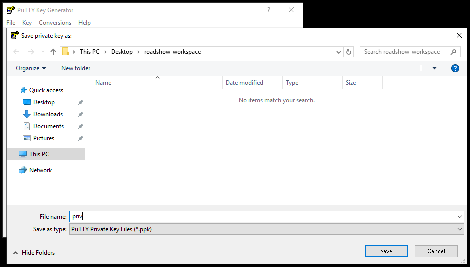
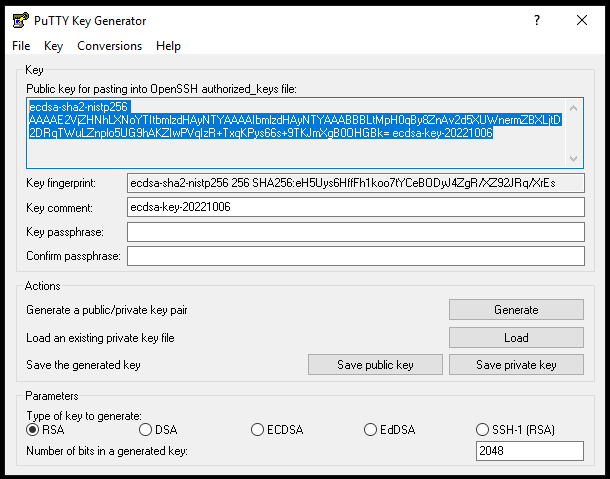
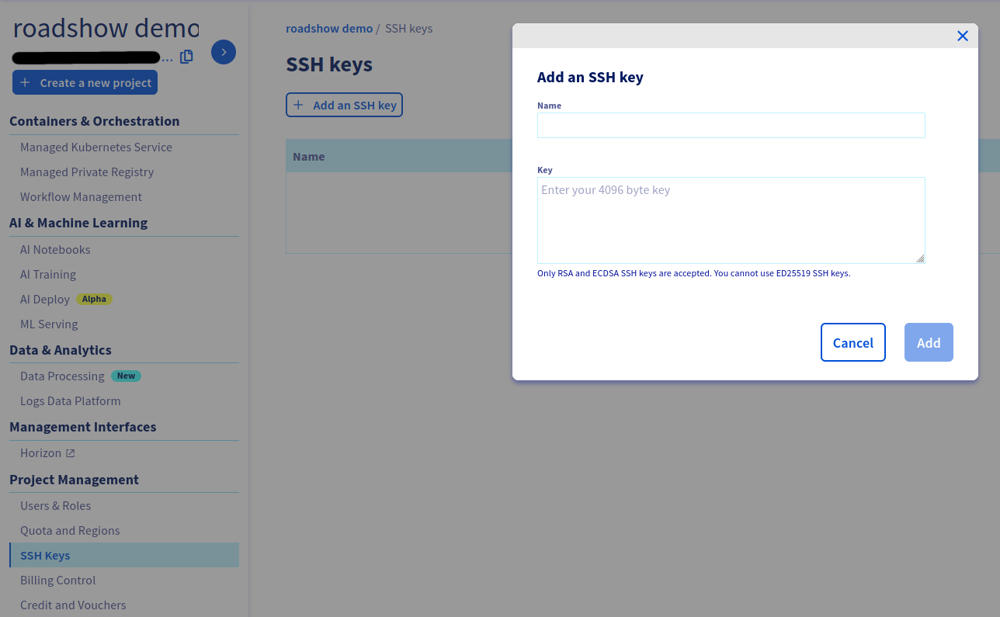

Ustawianie środowiska
W tej sekcji przygotujemy podstawowe środowisko do pracy
1. Stworzenie folderu roboczego
mkdir ~/roadshow-workspace
cd ~/roadshow-workspace
Utworzyć na pulpicie folder roadshow-workspace 
2. Stworzenie pary kluczy SSH
Stworzymy parę kluczy typu ED25519 dla zgodności z nowymi systemami operacyjnymi.
Wykorzystamy polecenie ssh-keygen z OpenSSH
ssh-keygen -t ed25519 -f ~/roadshow-workspace/key
Wykorzystamy program puttygen.exe który można pobrać z oficjalnej strony projektu: https://www.chiark.greenend.org.uk/~sgtatham/putty/latest.html
- Wygenerujemy parę kluczy SSH 
- Zapiszemy klucz publiczny do katalogu roboczego  
- Zapiszemy klucz prywatny bez hasła do katalogu roboczego  
3. Odczytanie klucza publicznego
Najpierw musimy odczytać część publiczną klucza SSH.
cat ~/roadshow-workspace/key.pub
ssh-ed25519 KEEEY user@host. To jest nasz klucz publiczny.
W programie puttygen.exe przez przycisk Load wczytamy plik priv z folderu roadshow-workspace.
Następnie skopiujemy cały ciąg znaków z okienka Public key for pasting into OpenSSH authorized_keys file. To jest nasz klucz publiczny.

4. Dodanie klucza do Managera (panelu OVHcloud)
Teraz wejdziemy do panelu OVHcloud do zakładki Public Cloud.
Wybieramy swój projekt i w sekcji Project Management wybieramy SSH Keys.
Następnie klikamy na Dodaj klucz SSH i podajemy nazwę oraz wklejamy część publiczną klucza
